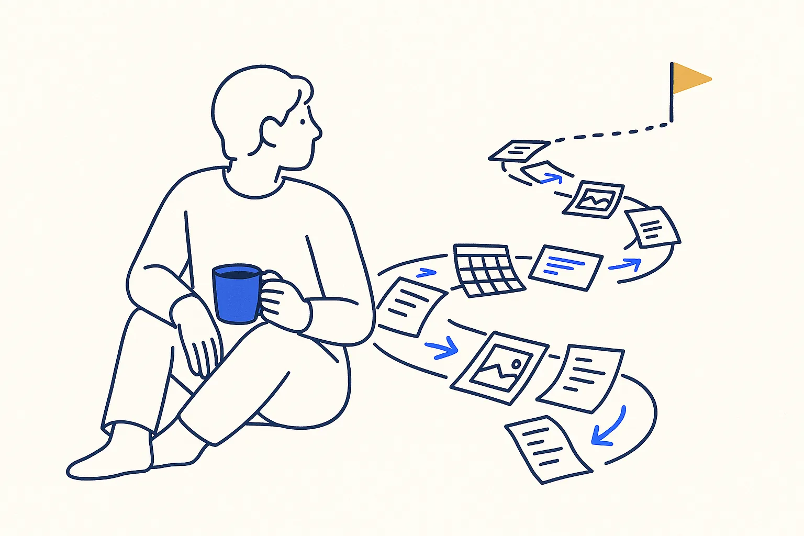
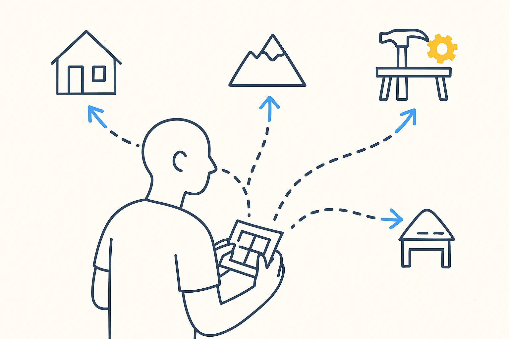
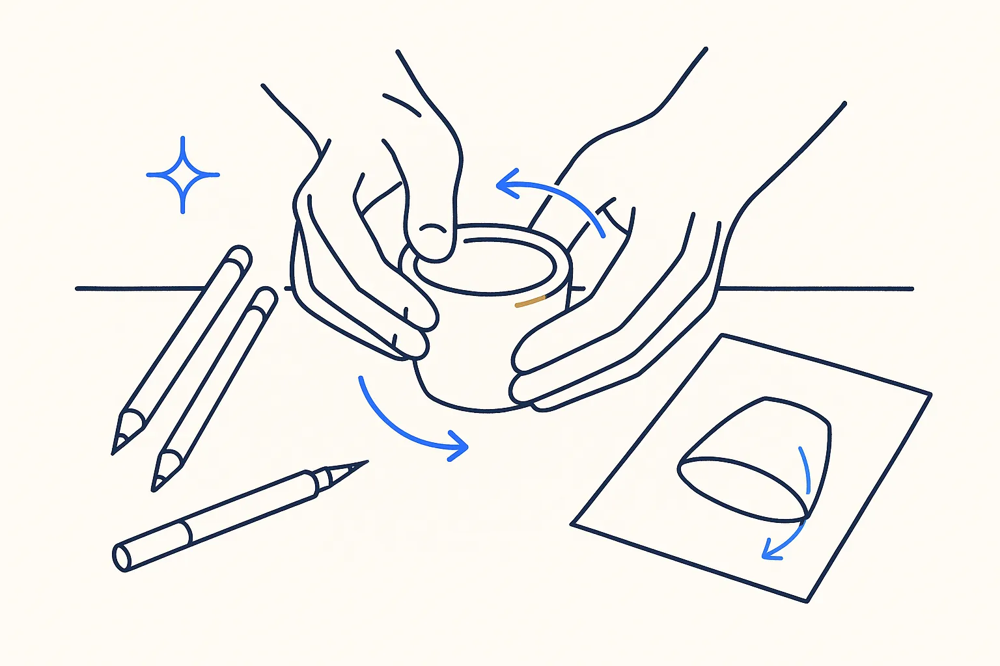
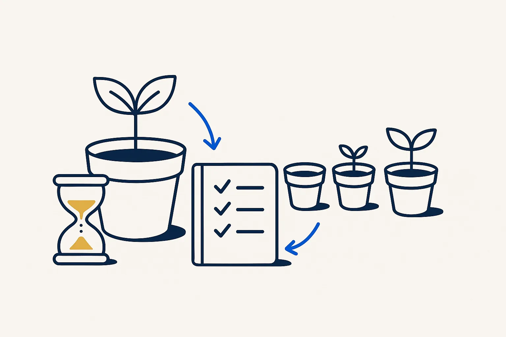
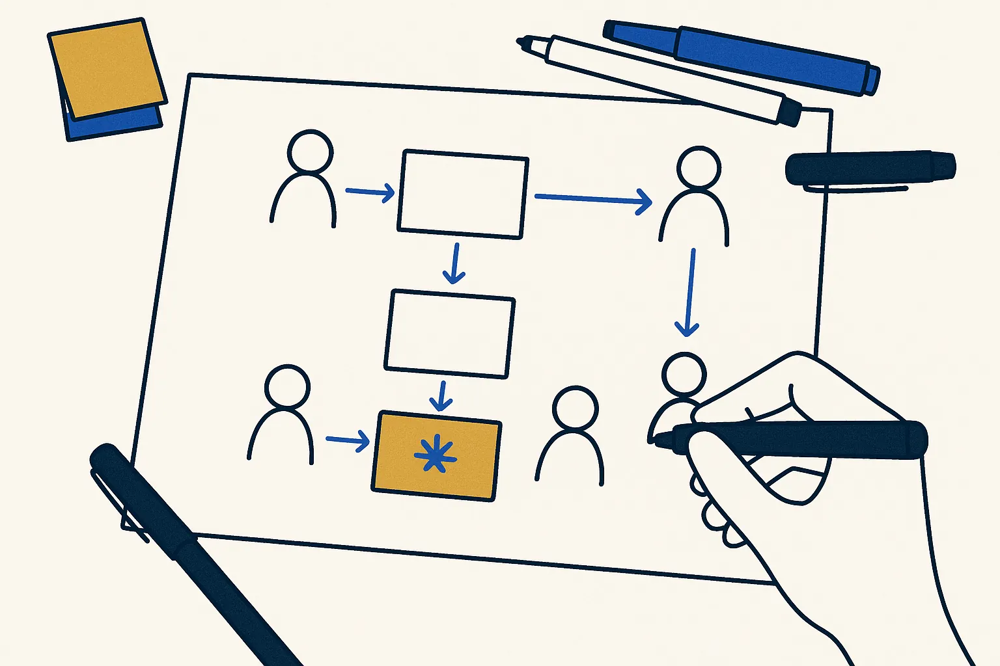

Design and small experiments · book
Life in Perspective
A step-by-step method for the annual life review: look back with gratitude first, look for patterns, then plan.
Tiago Forte · 2026

What the book is about
Tiago Forte's book on the annual life review: look back first, with gratitude, look for the patterns in the year, and only then plan the next one. It comes out on 3 November 2026; this page will be rewritten after reading.
Why it is on this list
The book gives the questions. A Build Day adds the data: the look-back half of a review is already in your calendar, your photos and your invoices. See the sample Generate the year in review from your own files.
On a Build Day
A year-in-review generator is a good first build: small, personal, and built entirely on data you already own.
Links
Concepts behind it
- The Calendar Is the Spine — One time-axis is the backbone of a second brain — everything dated hangs off it.
- The Experiment Loop — Play with a hypothesis: hypothesize → experiment → learn → decide. The mechanism that turns tinkering into a proven block.
Related articles
The neighbourhood
How this connects
More in Design and small experiments

Designing Your LifeBill Burnett & Dave Evans · 2016Design thinking applied to your own life: prototype conversations and small trials before big decisions. It translates directly to a company's first AI tool.Read more →
Do DesignAlan Moore · 2016A short book about design as a way of working, not a department.Read more →
Tiny ExperimentsAnne-Laure Le Cunff · 2025Treat a change as an experiment with a fixed duration instead of a goal. The same move is what makes a Build Day work: one small build, then decide.Read more →
Visual ThinkingWillemien Brand · 2017Drawing the problem before building it. Most scoping on a Build Day happens on paper first.Read more →